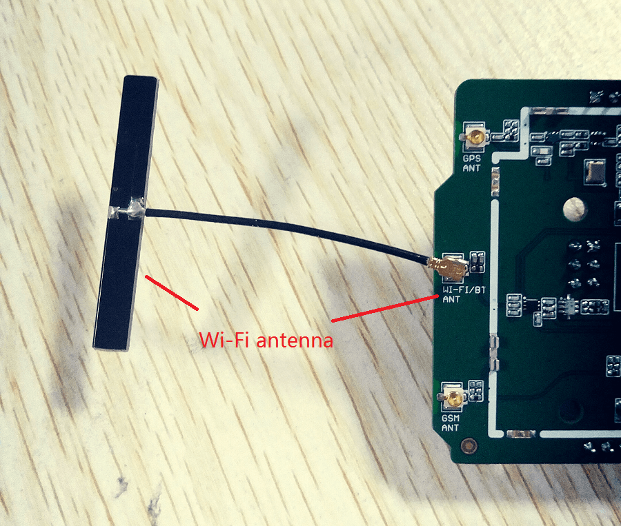

Note: This step is part of LinkIt ONE Twilio SMS Demo.
Before starting the firmware update, make sure the slide switches are in proper position ( MS/UART should be in MS position. USB/BAT in USB position):

Then, connect your LinkIt ONE to PC, you will get a 10M Disk(Just like a U-disk).
Open config.txt file. There are some information that needs to be filled.
Remember, we had got some account info at Register a Twilio account and Register a Temboo account?
Then slide the switch to UART position. Connect Grove - OLED 1.12 to I2C port. You need to install the WiFi antenna as well

Then, reset LinkIt ONE. You will get some information on LinkIt ONE:
Note: If you don't get Wifi ok for a long time, please check if you had filled the correct information about your AP.
Copyright (c) 2008-2016 Seeed Development Limited (www.seeedstudio.com / www.seeed.cc)